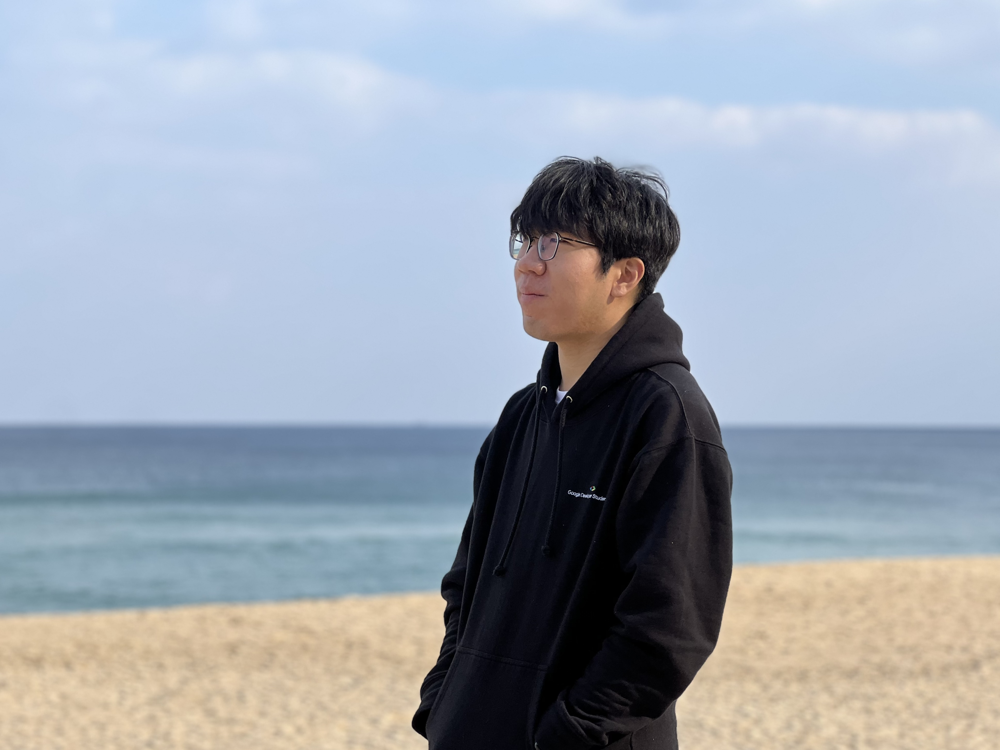

Korea Advanced Institute of Science and Technology (KAIST)
Sep. 2024 – CurrentPh.D. student in Artificial Intelligence
imbw2024@kaist.ac.kr
I am a 2nd year Ph.D. student of ALIN-LAB, advised by Prof. Jinwoo Shin at KAIST. I received my B.S. in CSE and STAT at Korea University in 2024.
The north star of my research is to develop a unified and scalable framework aligned with multi-modalities and human preferences for various vision-centric tasks. Currently, I am collaborating with Prof. Minsu Cho from POSTECH CVLAB and Prof. Sungjoon Choi from Korea Univ. RILAB for related topics.
If you want to have a discussion or coffee chat with me, please e-mail me. I am always positively open to all kinds of collaborations!

| Jun, 2026 | 🎉 SpatialBoost has been accepted to ECCV 2026! See you all in Malmö 🇸🇪 |
| Apr, 2026 | 🎉 VaLR has been accepted to ICML 2026! See you all in Seoul 🇰🇷 |
| Mar, 2026 | 🎉 Released two papers, VaLR and SpatialBoost, on arXiv. |
| Sep, 2024 | 🎉 I start my Ph.D. journey at KAIST AI. |
Preprint
CoRL SAFE-ROL Workshop 2025
Ph.D. student in Artificial Intelligence
B.S. in Computer Science & Engineering (First Major)
B.E. in Statistics (Double Major)